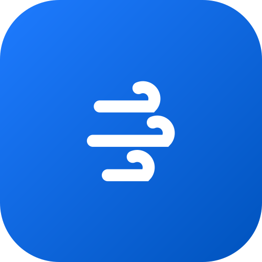
应用图标品牌主名 GoWind，中文名 风行——如风疾行。Admin 只是产品线之一，因此本提案以 「主品牌标识 + 产品名后缀」的架构设计：图形标与字标属于 GoWind 风行，产品（Admin / CMS / UBA / IM / 量化…） 通过文字后缀组合，不再单独造标。色板取自《设计语言规范》权威主色 hsl(212 100% 45%) ≈ #006BE6， 渐变取其明暗两阶（#70B3FF → #005AC2）。全部资产为纯矢量 SVG，无字体依赖。
三道流动的风痕，尾端卷成浪形回勾，长短错落制造速度感。语义最直白——一眼是"风"，与"风行"的疾行意象最贴；笔画粗壮，16px 下依然清晰。气质：轻盈、敏捷、工具感。

应用图标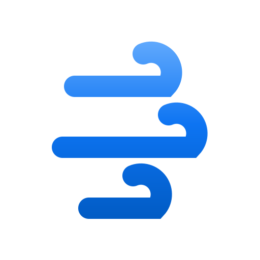
图形 · 浅底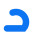
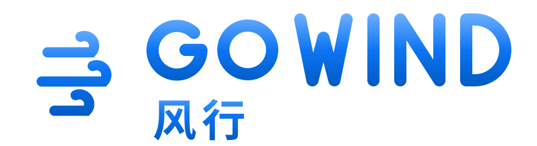
三段弧线首尾旋接成气旋，由内向外渐次展开，透明度递减造纵深。剪影近圆形，是天生的应用图标形；"汇聚流转、以风御风"的隐喻贴合多产品线的平台底座。气质：有力、向心、平台感。
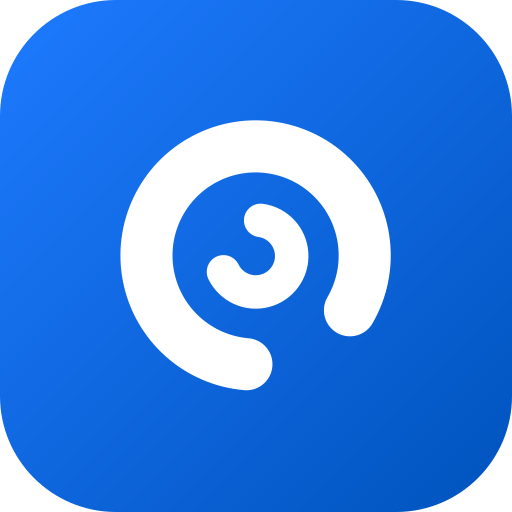
应用图标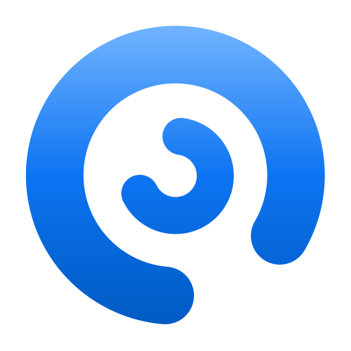
图形 · 浅底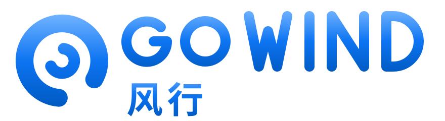
GoWind 之 "W"（Wind）的三笔连写，末笔高高挑起并向后卷成风环——字母与风的动势合为一体。独字标识在侧栏收窄、社交头像等场景辨识度最高。气质：利落、签名感、品牌感。
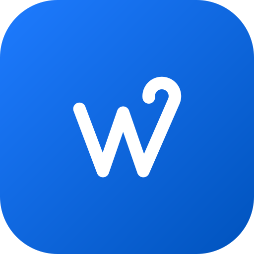
应用图标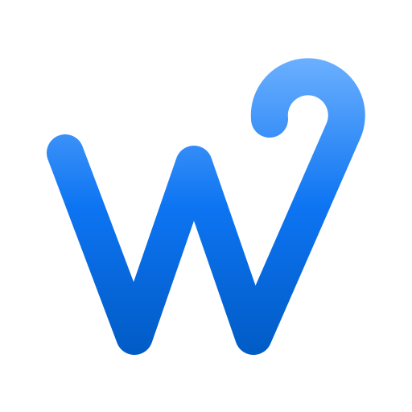
图形 · 浅底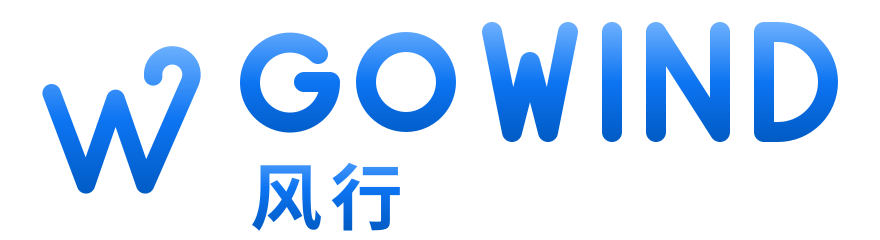
GOWIND（渐变）+ 风行（实色）两行式几何字标，「风行」二字同样为手工几何笔画并已转路径——不依赖任何字体，任何环境渲染一致。可配合任一图形方案使用。
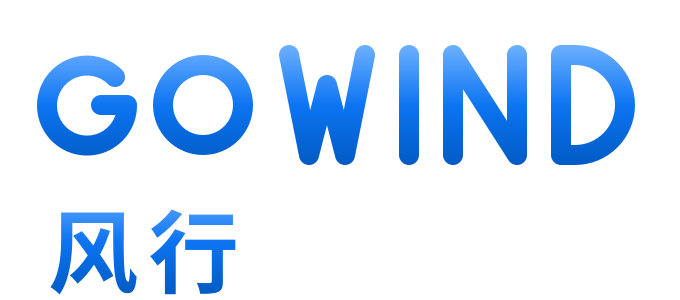
字标 · 浅底主品牌图形标全产品共用；产品名以「GoWind × 产品名」文字后缀呈现（系统字体即可），侧栏、启动页、文档头均按此组合。以下用方案 A 图形示意（最终以选定方案为准）。